QQ聊天操作基础
作者：TeliuTe 来源：基础教程网
十二、QQ游戏(斗地主) 返回目录在 QQ 里除了聊天，还可以玩一些智力游戏，注意，游戏只是轻松娱乐，不要沉迷陷入；
1、安装 QQ 游戏大厅
1）登录 QQ，在面板的下边有一个小企鹅图标，这就是“QQ游戏”；
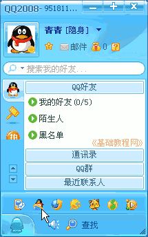2）单击这个按钮，出来一个安装提示，点“安装”，如果出来Windows安全警报，点“解除阻止”；
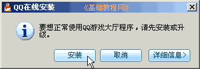
3）然后开始下载安装包，如果下载太慢，也可以到腾讯的网站上去下载：http://qqgame.qq.com/download.shtml
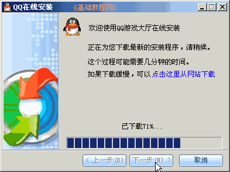
4）下载完成后，点“下一步”开始安装；
5）接下来是许可协议，提示适当玩游戏，点“我接受”继续；
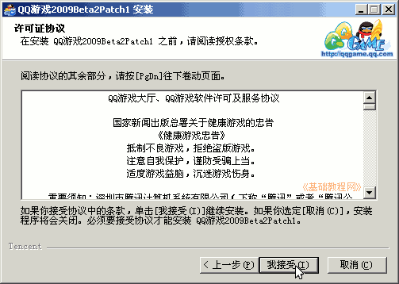
6）然后是选择位置，点“下一步”继续；
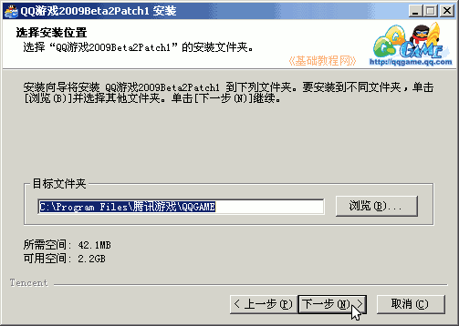
7）然后是打勾选项，留下第二个桌面和第四个加速器，点“安装”继续；
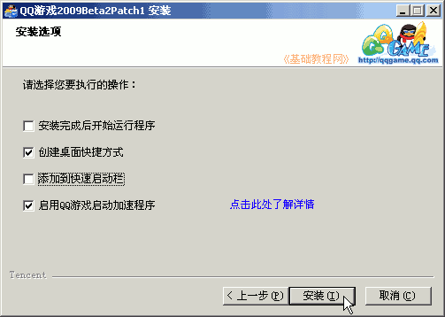
8）然后开始安装 QQ 游戏大厅程序，这儿耐心等待即可；
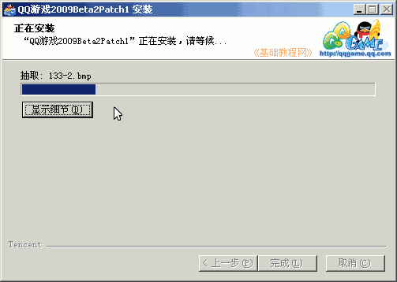
9）安装成功后，在出来的面板中点“完成”；
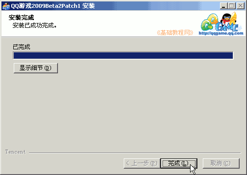
这时桌面上就有一个 QQ游戏的图标，开始菜单里也有相应的菜单项；
2、QQ 游戏
1）双击桌面 QQ 游戏图标，出来一个登录框，输入自己的QQ号和密码，然后点登录；
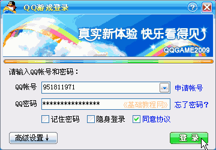
2）稍等进入游戏大厅，在左边列表里有各种游戏，加号是折叠的意思，单击可以展开，
找到“欢乐斗地主”，灰色图标表示还没安装；
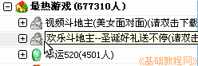
3）瞄准“欢乐斗地主”双击，出来一个下载提示，点“确定”；
4）然后出来一个下载进度条，这儿耐心等待下载和安装，如果出来安全警报，点“解除阻止”；
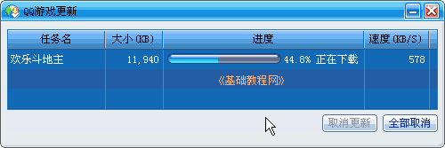
5）安装完成后，出来一个完成提示，点“确定”，回到左边列表，这时候斗地主图标变成彩色，可以使用了；
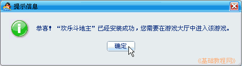
6）在左边列表中，单击斗地主旁边的加号，选择一个新手区的房间，瞄准房间，双击进入；
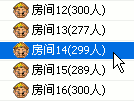
如果不能进入，提示“需要蓝钻”，就点“取消”，换一个别的房间试试，
7）如果能够进入，就出来一个提示，需要消费“220豆”，点“确定”进入；
8）进入后窗口里有许多桌子的图标，在上边菜单栏找到“加入”，单击就可以进入游戏，
准备好了点“开始”，就可以进行游戏了；
9）退出的方法是，在上边菜单栏右边找到“退出”，单击就可以返回到左边列表；
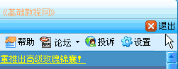
然后再在大厅的右上角，找到“退出”按钮，单击就可以退出 QQ 游戏了；
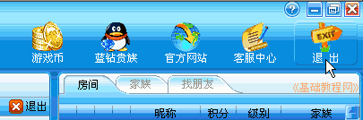
本节学习了 QQ 游戏的基本操作，如果你成功地完成了练习，请继续学习下一课内容；
本教程由86团学校TeliuTe制作|著作权所有
基础教程网：http://teliute.org/
美丽的校园……
转载和引用本站内容，请保留版权信息和本站链接。